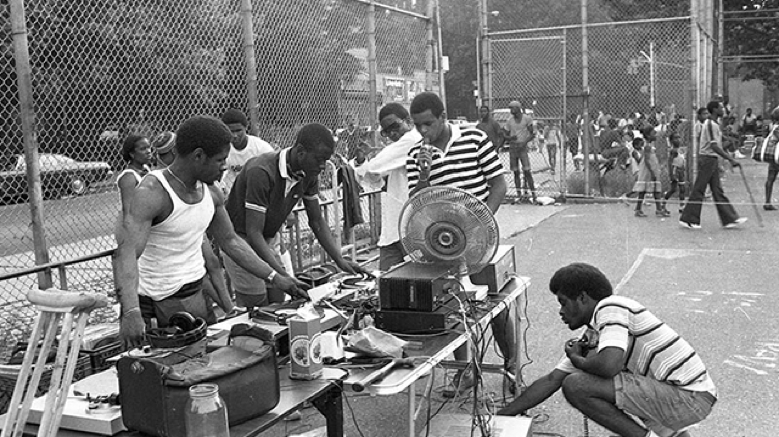
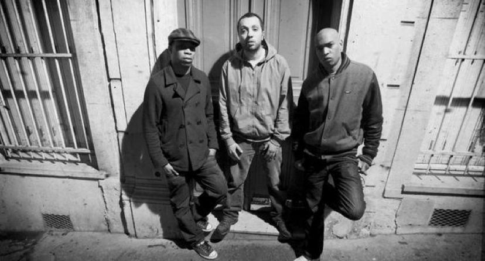

It wasn't until the 1990’s that Hip-Hop music took its place in Europe. Many European countries took on the aesthetics and culture of Hip-Hop from the US and infused it with European languages and culture to create a style that they call their own.
 Hip-Hop music originated in the ghettos of the Bronx, New York where the African American youth created a movement of expression through dance, graffiti, and “rapping”. This form of expression is rooted in confronting the oppressive forces and systems against African American people in the US. Hip Hop content was based around the struggles of being black, displaced, and oppressed. This universal shared experience led to the transmission of Hip Hop music to be received by Europeans in the ghetto.
Though Black people in Europe may not be able to relate to all the African American experiences that Hip Hop confronts, it would be quite negligent to not acknowledge the systematic racism that Afro Europeans experience. It was to no surprise that a #BlackLivesMatter movement sparked in Paris, France in 2016 after a 24 year old black man, Adama Traoré, died while he was in police custody. Many “woke” artists in the US use symbolic cases like Traoré’s as a vessel for outcry within their music, such as Frank Ocean’s “R.I.P. Trayvon, that n*gg* look just like me.” We’ll call this “conscious rap,” and it’s something very prominent in European countries as well. La Rumeur is a French hip-hop ensemble famous in France for their outspoken lyrics against the French police and justice systems. Some of these lyrics actually caused La Rumeur to be charged in court by the former president of France for their “libel and slander” towards the French police.
This goes to show how systematic oppression against people of color is a global phenomenon and how these experiences have prompted people of color everywhere to speak out and express their experiences of anger, hurt and mistreatment through Hip Hop.
 LA RUMEUR: https://www.youtube.com/user/LaRumeurOfficiel